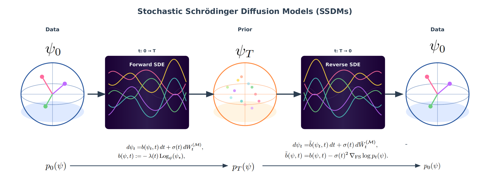
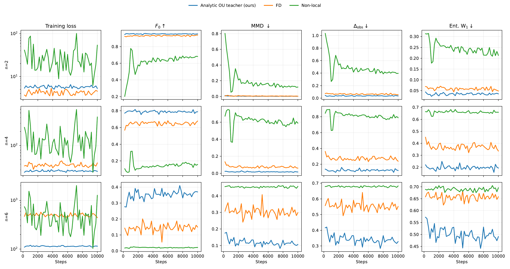

Stochastic Schrodinger Diffusion Models for Pure-State Ensemble Generation
Preprint manuscriptSSDMs formulate score-based generative modeling directly on the complex projective manifold of quantum pure states, using stochastic Schrodinger dynamics and Fubini-Study geometry.
At a Glance
SSDM is an intrinsic score-based model for distributions over quantum pure states. Instead of learning in a redundant ambient vector space, it defines diffusion and reverse-time sampling on the projective manifold of normalized states modulo global phase.
Abstract
In quantum machine learning, classical data are often encoded as quantum pure states and processed directly as quantum representations, motivating representation-level generative modeling that samples new quantum states from an underlying pure-state ensemble.
Stochastic Schrodinger Diffusion Models define an intrinsic score-based generative framework on complex projective space endowed with the Fubini-Study metric. SSDMs formulate a forward Riemannian diffusion with a stochastic Schrodinger equation realization and derive reverse-time dynamics driven by the Riemannian score.
A local-time objective based on a local Euclidean Ornstein-Uhlenbeck approximation in Fubini-Study normal coordinates enables tractable training without analytic transition densities.
Method Overview
The forward process gradually noises pure states on the Fubini-Study manifold. The learned reverse-time dynamics use a Riemannian score field to transport samples back toward the target ensemble.

Core Formulation
SSDM learns a Riemannian score field on the pure-state manifold M = CPd-1. The forward diffusion is defined intrinsically with Fubini-Study geometry, while the reverse-time sampler uses the learned score to move samples from a simple prior back to the data ensemble.
Since transition densities on complex projective space are generally unavailable, training uses a local-time teacher. In Fubini-Study normal coordinates, short-time motion is approximated by a Euclidean OU/VP step in the tangent space.
Algorithm 1: Stochastic Schrodinger Diffusion Models
- Input: data samples {ψ0(i)}, horizon T, step sizes Δt and δt, schedules σ(t), λ(t), and a prior sampler for pT.
- Training: sample ψ0 from p0 and t uniformly from (δt, T).
- Simulate the forward Riemannian OU diffusion to obtain (ψt-δt, ψt).
- Compute normal coordinates z = logψt-δt(ψt).
- Compute the local-time teacher score in tangent space and map it back to the manifold.
- Update θ by matching sθ(ψt,t) to the teacher score.
- Sampling: draw ψT from pT and integrate reverse-time dynamics from T to 0.
- At each reverse step, draw tangent noise, form the score-corrected update, and move by the Fubini-Study exponential map or a retraction.
- Return: ψ0 as a generated sample from the learned pure-state ensemble.
Main Results
Full Table 1 from the preprint. Higher is better for fidelity; lower is better for MMD, observable discrepancy, and entanglement Wasserstein distance.
| Qubits | Method | Fidelity | MMD | Obs. gap | Ent. W1 |
|---|---|---|---|---|---|
| 2 | QDDPM | 0.8991 | 1.3092e-2 | 1.0294e-1 | 6.9427e-2 |
| 2 | QGAN | 0.5261 | 4.3099e-1 | 6.0502e-1 | 3.4518e-1 |
| 2 | Euclidean VP-SDE | 0.2487 | 7.1676e-1 | 9.7489e-1 | 2.8790e-1 |
| 2 | RSGM | 0.2889 | 6.3424e-1 | 9.1988e-1 | 3.0743e-1 |
| 2 | SSDM | 0.9582 | 2.04e-3 | 2.86e-2 | 2.69e-2 |
| 4 | QDDPM | 0.5062 | 2.2183e-1 | 4.4425e-1 | 4.6388e-1 |
| 4 | QGAN | 0.0969 | 7.5063e-1 | 8.6419e-1 | 6.8635e-1 |
| 4 | Euclidean VP-SDE | 0.0539 | 7.7408e-1 | 9.0754e-1 | 6.6624e-1 |
| 4 | RSGM | 0.0859 | 7.0681e-1 | 8.6678e-1 | 6.6605e-1 |
| 4 | SSDM | 0.8144 | 1.44e-2 | 9.75e-2 | 1.66e-1 |
| 6 | QDDPM | 0.1435 | 3.9985e-1 | 5.0898e-1 | 1.9413e-1 |
| 6 | QGAN | 0.0246 | 4.7364e-1 | 6.7442e-1 | 6.8376e-1 |
| 6 | Euclidean VP-SDE | 0.0143 | 4.6681e-1 | 6.8395e-1 | 6.8180e-1 |
| 6 | RSGM | 0.0603 | 4.0124e-1 | 6.3683e-1 | 6.8753e-1 |
| 6 | SSDM | 0.3922 | 9.69e-2 | 3.05e-1 | 4.66e-1 |

Preprint
Direct PDF link: https://xujianscut.github.io/ssdm-project/assets/ssdm_preprint.pdf
BibTeX
@misc{xu2026ssdm,
title={Stochastic Schr{\"o}dinger Diffusion Models for Pure-State Ensemble Generation},
author={Xu, Jian and Chen, Wei and Li, Chao and Zheng, Jingyuan and Zeng, Delu and Paisley, John and Zhao, Qibin},
year={2026},
note={Preprint manuscript. Project page: \url{https://xujianscut.github.io/ssdm-project/}. PDF: \url{https://xujianscut.github.io/ssdm-project/assets/ssdm_preprint.pdf}}
}